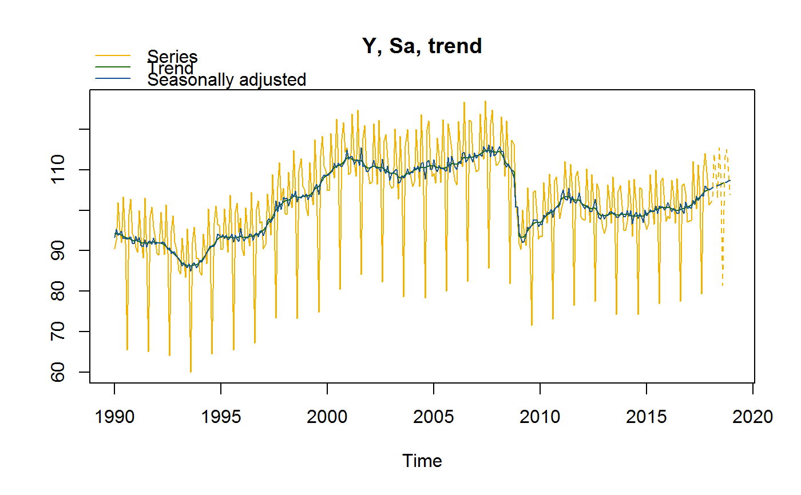
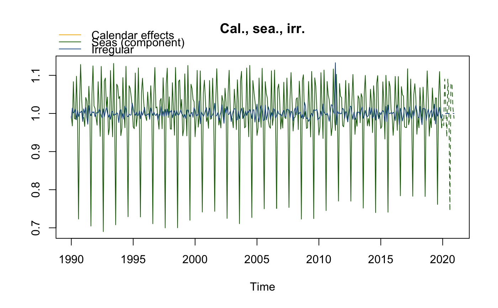
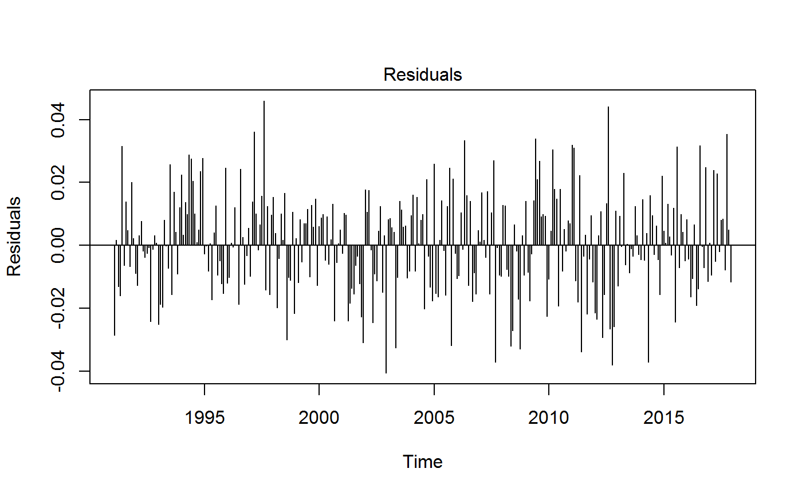
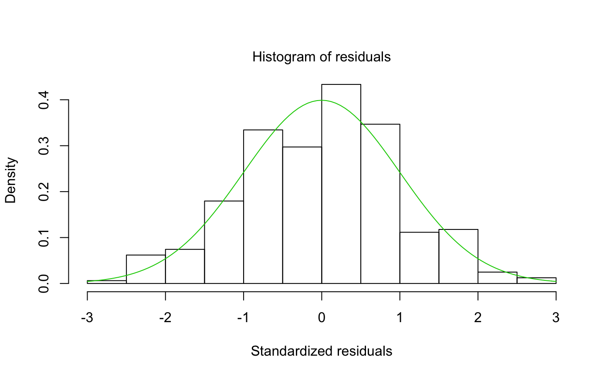
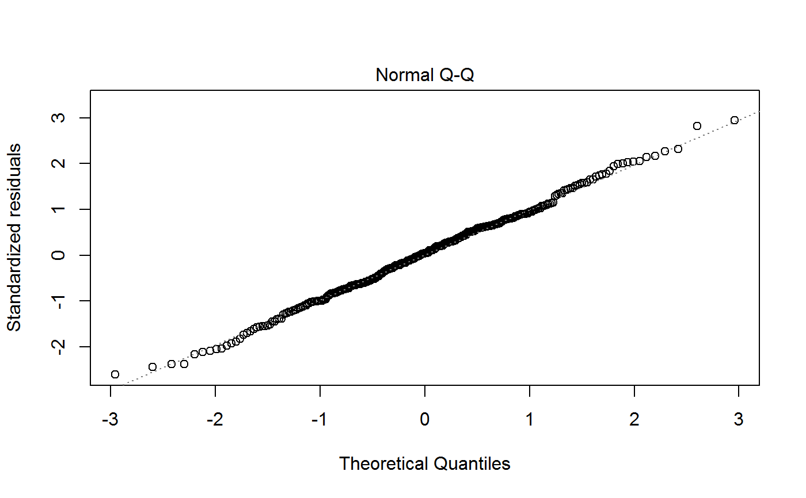
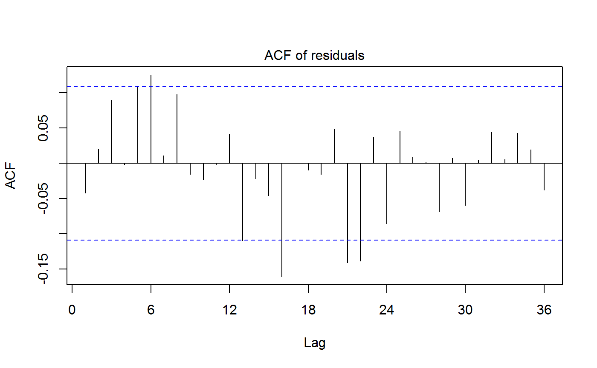
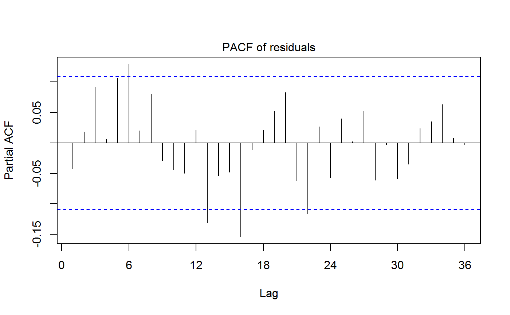
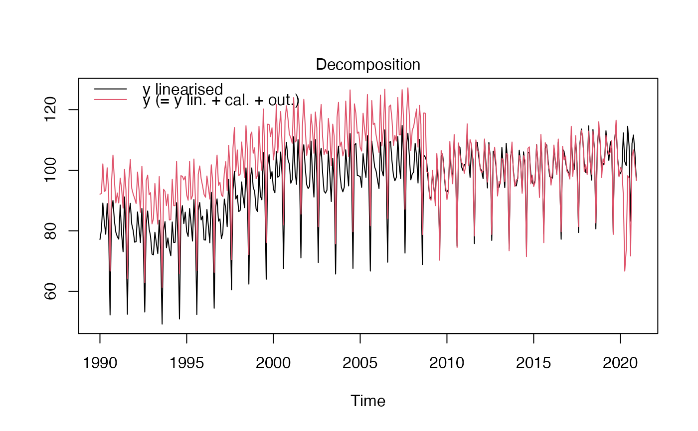
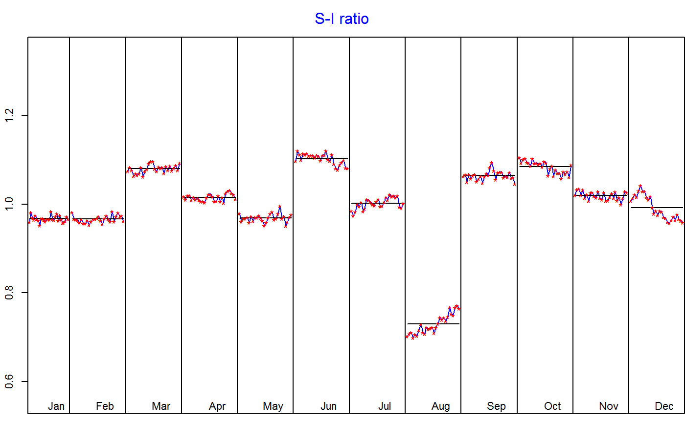

Function to estimate the seasonally adjusted series (sa) with the TRAMO-SEATS method.
This is achieved by decomposing the time series (y) into the: trend-cycle (t), seasonal component (s) and irregular component (i).
The final seasonally adjusted series shall be free of seasonal and calendar-related movements.
tramoseats returns a preformatted result while jtramoseats returns the Java objects of the seasonal adjustment.
jtramoseats(series, spec = c("RSAfull", "RSA0", "RSA1", "RSA2", "RSA3", "RSA4", "RSA5"), userdefined = NULL) tramoseats(series, spec = c("RSAfull", "RSA0", "RSA1", "RSA2", "RSA3", "RSA4", "RSA5"), userdefined = NULL)
| series | a univariate time series |
|---|---|
| spec | model specification TRAMO-SEATS. It can be a |
| userdefined | vector with characters for additional output variables (see |
jtramoseats returns a jSA object. It contains the Java objects of the result of the seasonal adjustment without any formatting. Therefore the computation is faster than with tramoseats. The results can the seasonal adjustment can be extract by get_indicators.
tramoseats returns an object of class c("SA","TRAMO_SEATS"), a list containing the following components:
object of class c("regarima","TRAMO_SEATS"). See Value of the function regarima.
object of class "decomposition_SEATS", five elements list:
specification list with the SEATS algorithm specification. See also function tramoseats_spec
mode decomposition mode
model list with the SEATS models: model, sa, trend, seasonal, transitory, irregular. Each of them is a matrix with the estimated coefficients.
linearized time series matrix (mts) with the stochastic series decomposition (input series y_lin, seasonally adjusted sa_lin, trend t_lin, seasonal s_lin, irregular i_lin)
components time series matrix (mts) with the decomposition components (input series y_cmp, seasonally adjusted sa_cmp, trend t_cmp, seasonal s_cmp, irregular i_cmp)
object of class c("final","mts","ts","matrix"). Matrix with the final results of the seasonal adjustment.
It includes time series: original time series (y), forecast of the original series (y_f), trend (t), forecast of the trend (t_f),
seasonally adjusted series (sa), forecast of the seasonally adjusted series (sa_f),
seasonal component (s), forecast of the seasonal component (s_f), irregular component (i) and the forecast of the irregular component (i_f).
object of class "diagnostics", list with three type of diagnostics tests:
variance_decomposition data.frame with the tests on the relative contribution of the components to the stationary portion of the variance in the original series, after the removal of the long term trend.
residuals_test data.frame with the tests on the presence of seasonality in the residuals (includes the statistic, p-value and parameters description)
combined_test combined tests for stable seasonality in the entire series. Two elements list with: tests_for_stable_seasonality - data.frame with the tests (includes the statistic, p-value and parameters description) and combined_seasonality_test - the summary.
object of class "user_defined". List containing the userdefined additional variables defined in the userdefined argument.
The first step of the seasonal adjustment consist of pre-adjusting the time series by removing from it the deterministic effects by means of a regression model with ARIMA noise (RegARIMA, see: regarima).
In the second part, the pre-adjusted series is decomposed into the following components: trend-cycle (t), seasonal component (s) and irregular component (i). The decomposition can be: additive (\(y = t + s + i\)) or multiplicative (\(y = t * s * i\)). The final seasonally adjusted series (sa) shall be free of seasonal and calendar-related movements.
In the TRAMO-SEATS method, the second step - SEATS ("Signal Extraction in ARIMA Time Series") - performs an ARIMA-based decomposition of an observed time series into unobserved components. More information on the method can be found on the Bank of Spian website (www.bde.es).
As regards the available predefined 'JDemetra+' TRAMO-SEATS model specifications, they are described in the table below.
| Identifier | | | Log/level detection | | | Outliers detection | |||
| | | Calendar effects | | | ARIMA | ||||
| RSA0 | | NA | | | NA | | | |||
| NA | | | Airline(+mean) | RSA1 | | automatic | | AO/LS/TC | | ||
| NA | | | Airline(+mean) | RSA2 | | automatic | | AO/LS/TC | | 2 td vars + Easter | | |
| Airline(+mean) | RSA3 | | automatic | | AO/LS/TC | | NA | | | ||
| automatic | RSA4 | | automatic | | AO/LS/TC | | 2 td vars + Easter | | automatic | ||
| RSA5 | | automatic | | AO/LS/TC | | 7 td vars + Easter | | automatic | RSAfull | | automatic | | |
| AO/LS/TC | | automatic | | automatic | Identifier | | | Log/level detection |
Info on 'JDemetra+', usage and functions: https://ec.europa.eu/eurostat/cros/content/documentation_en
BOX G.E.P. and JENKINS G.M. (1970), "Time Series Analysis: Forecasting and Control", Holden-Day, San Francisco.
BOX G.E.P., JENKINS G.M., REINSEL G.C. and LJUNG G.M. (2015), "Time Series Analysis: Forecasting and Control", John Wiley & Sons, Hoboken, N. J., 5th edition.
myseries <- ipi_c_eu[, "FR"] myspec <- tramoseats_spec("RSAfull") mysa <- tramoseats(myseries, myspec) mysa#> RegARIMA #> y = regression model + arima (2, 1, 1, 0, 1, 1) #> Log-transformation: yes #> Coefficients: #> Estimate Std. Error #> Phi(1) 0.3525 0.256 #> Phi(2) 0.1336 0.130 #> Theta(1) -0.1868 0.256 #> BTheta(1) -0.6109 0.047 #> #> Estimate Std. Error #> Monday -0.0022941 0.002 #> Tuesday 0.0005841 0.002 #> Wednesday 0.0032202 0.002 #> Thursday -0.0054984 0.002 #> Friday 0.0033421 0.002 #> Saturday 0.0018654 0.002 #> Easter [6] -0.0110283 0.003 #> LS (11-2008) -0.0794304 0.013 #> LS (1-2009) -0.0711852 0.013 #> AO (8-2001) 0.0447084 0.013 #> #> #> Residual standard error: 0.01593 on 323 degrees of freedom #> Log likelihood = 875.8, aic = 1261 aicc = 1263, bic(corrected for length) = -8.028 #> #> #> #> Decomposition #> Model #> AR : 1 + 0.352498 B + 0.133616 B^2 #> D : 1 - B - B^12 + B^13 #> MA : 1 - 0.186819 B - 0.610856 B^12 + 0.114119 B^13 #> #> #> SA #> D : 1 - 2.000000 B + B^2 #> MA : 1 - 1.314459 B + 0.340427 B^2 #> Innovation variance: 0.4669153 #> #> Trend #> D : 1 - 2.000000 B + B^2 #> MA : 1 + 0.040206 B - 0.959794 B^2 #> Innovation variance: 0.04869563 #> #> Seasonal #> AR : 1 + 0.352498 B + 0.133616 B^2 #> D : 1 + B + B^2 + B^3 + B^4 + B^5 + B^6 + B^7 + B^8 + B^9 + B^10 + B^11 #> MA : 1 + 0.717848 B + 0.460721 B^2 + 0.310085 B^3 + 0.132447 B^4 - 0.049053 B^5 - 0.216655 B^6 - 0.354556 B^7 - 0.445030 B^8 - 0.469587 B^9 - 0.376625 B^10 - 0.166397 B^11 - 0.410618 B^12 - 0.132580 B^13 #> Innovation variance: 0.1601924 #> #> Irregular #> Innovation variance: 0.2056884 #> #> #> #> Final #> Last observed values #> y sa t s i #> Jan 2017 97.4 100.9393 100.9657 0.9649365 0.9997384 #> Feb 2017 97.5 100.7654 101.2610 0.9675939 0.9951058 #> Mar 2017 112.0 102.0879 101.7064 1.0970937 1.0037513 #> Apr 2017 103.0 101.8416 102.1713 1.0113745 0.9967732 #> May 2017 100.4 103.0277 102.6087 0.9744949 1.0040835 #> Jun 2017 111.2 102.7958 102.9753 1.0817564 0.9982567 #> Jul 2017 103.4 103.3099 103.3367 1.0008726 0.9997398 #> Aug 2017 79.3 103.7805 103.7458 0.7641131 1.0003339 #> Sep 2017 109.7 103.7154 104.2747 1.0577017 0.9946372 #> Oct 2017 114.0 105.6674 104.8749 1.0788572 1.0075559 #> Nov 2017 107.7 105.4730 105.1795 1.0211146 1.0027905 #> Dec 2017 101.4 104.9614 105.2317 0.9660690 0.9974316 #> #> Forecasts: #> y_f sa_f t_f s_f i_f #> Jan 2018 102.19076 105.3388 105.3397 0.9701155 0.9999914 #> Feb 2018 102.32758 105.5082 105.5091 0.9698541 0.9999914 #> Mar 2018 114.29051 105.6780 105.6789 1.0814979 0.9999914 #> Apr 2018 107.91102 105.8480 105.8489 1.0194904 0.9999914 #> May 2018 102.68809 106.0183 106.0192 0.9685884 0.9999914 #> Jun 2018 115.89624 106.1889 106.1898 1.0914161 0.9999914 #> Jul 2018 106.23593 106.3597 106.3606 0.9988362 0.9999914 #> Aug 2018 81.47084 106.5308 106.5317 0.7647630 0.9999914 #> Sep 2018 112.88837 106.7022 106.7031 1.0579757 0.9999914 #> Oct 2018 115.34277 106.8739 106.8748 1.0792417 0.9999914 #> Nov 2018 109.29540 107.0458 107.0468 1.0210148 0.9999914 #> Dec 2018 103.27711 107.2181 107.2190 0.9632435 0.9999914 #> #> #> Diagnostics #> Relative contribution of the components to the stationary #> portion of the variance in the original series, #> after the removal of the long term trend #> Trend computed by Hodrick-Prescott filter (cycle length = 8.0 years) #> Component #> Cycle 2.181 #> Seasonal 66.768 #> Irregular 0.106 #> TD & Hol. 0.069 #> Others 30.507 #> Total 99.630 #> #> Combined test in the entire series #> Non parametric tests for stable seasonality #> P.value #> Kruskall-Wallis test 0.000 #> Test for the presence of seasonality assuming stability 0.000 #> Evolutive seasonality test 0.185 #> #> Identifiable seasonality present #> #> Residual seasonality tests #> P.value #> qs test on sa 1.000 #> qs test on i 1.000 #> f-test on sa (seasonal dummies) 1.000 #> f-test on i (seasonal dummies) 1.000 #> Residual seasonality (entire series) 1.000 #> Residual seasonality (last 3 years) 0.977 #> f-test on sa (td) 0.927 #> f-test on i (td) 1.000 #> #> #> Additional output variables# Equivalent to: mysa1 <- tramoseats(myseries, spec = "RSAfull") mysa1#> RegARIMA #> y = regression model + arima (2, 1, 1, 0, 1, 1) #> Log-transformation: yes #> Coefficients: #> Estimate Std. Error #> Phi(1) 0.3525 0.256 #> Phi(2) 0.1336 0.130 #> Theta(1) -0.1868 0.256 #> BTheta(1) -0.6109 0.047 #> #> Estimate Std. Error #> Monday -0.0022941 0.002 #> Tuesday 0.0005841 0.002 #> Wednesday 0.0032202 0.002 #> Thursday -0.0054984 0.002 #> Friday 0.0033421 0.002 #> Saturday 0.0018654 0.002 #> Easter [6] -0.0110283 0.003 #> LS (11-2008) -0.0794304 0.013 #> LS (1-2009) -0.0711852 0.013 #> AO (8-2001) 0.0447084 0.013 #> #> #> Residual standard error: 0.01593 on 323 degrees of freedom #> Log likelihood = 875.8, aic = 1261 aicc = 1263, bic(corrected for length) = -8.028 #> #> #> #> Decomposition #> Model #> AR : 1 + 0.352498 B + 0.133616 B^2 #> D : 1 - B - B^12 + B^13 #> MA : 1 - 0.186819 B - 0.610856 B^12 + 0.114119 B^13 #> #> #> SA #> D : 1 - 2.000000 B + B^2 #> MA : 1 - 1.314459 B + 0.340427 B^2 #> Innovation variance: 0.4669153 #> #> Trend #> D : 1 - 2.000000 B + B^2 #> MA : 1 + 0.040206 B - 0.959794 B^2 #> Innovation variance: 0.04869563 #> #> Seasonal #> AR : 1 + 0.352498 B + 0.133616 B^2 #> D : 1 + B + B^2 + B^3 + B^4 + B^5 + B^6 + B^7 + B^8 + B^9 + B^10 + B^11 #> MA : 1 + 0.717848 B + 0.460721 B^2 + 0.310085 B^3 + 0.132447 B^4 - 0.049053 B^5 - 0.216655 B^6 - 0.354556 B^7 - 0.445030 B^8 - 0.469587 B^9 - 0.376625 B^10 - 0.166397 B^11 - 0.410618 B^12 - 0.132580 B^13 #> Innovation variance: 0.1601924 #> #> Irregular #> Innovation variance: 0.2056884 #> #> #> #> Final #> Last observed values #> y sa t s i #> Jan 2017 97.4 100.9393 100.9657 0.9649365 0.9997384 #> Feb 2017 97.5 100.7654 101.2610 0.9675939 0.9951058 #> Mar 2017 112.0 102.0879 101.7064 1.0970937 1.0037513 #> Apr 2017 103.0 101.8416 102.1713 1.0113745 0.9967732 #> May 2017 100.4 103.0277 102.6087 0.9744949 1.0040835 #> Jun 2017 111.2 102.7958 102.9753 1.0817564 0.9982567 #> Jul 2017 103.4 103.3099 103.3367 1.0008726 0.9997398 #> Aug 2017 79.3 103.7805 103.7458 0.7641131 1.0003339 #> Sep 2017 109.7 103.7154 104.2747 1.0577017 0.9946372 #> Oct 2017 114.0 105.6674 104.8749 1.0788572 1.0075559 #> Nov 2017 107.7 105.4730 105.1795 1.0211146 1.0027905 #> Dec 2017 101.4 104.9614 105.2317 0.9660690 0.9974316 #> #> Forecasts: #> y_f sa_f t_f s_f i_f #> Jan 2018 102.19076 105.3388 105.3397 0.9701155 0.9999914 #> Feb 2018 102.32758 105.5082 105.5091 0.9698541 0.9999914 #> Mar 2018 114.29051 105.6780 105.6789 1.0814979 0.9999914 #> Apr 2018 107.91102 105.8480 105.8489 1.0194904 0.9999914 #> May 2018 102.68809 106.0183 106.0192 0.9685884 0.9999914 #> Jun 2018 115.89624 106.1889 106.1898 1.0914161 0.9999914 #> Jul 2018 106.23593 106.3597 106.3606 0.9988362 0.9999914 #> Aug 2018 81.47084 106.5308 106.5317 0.7647630 0.9999914 #> Sep 2018 112.88837 106.7022 106.7031 1.0579757 0.9999914 #> Oct 2018 115.34277 106.8739 106.8748 1.0792417 0.9999914 #> Nov 2018 109.29540 107.0458 107.0468 1.0210148 0.9999914 #> Dec 2018 103.27711 107.2181 107.2190 0.9632435 0.9999914 #> #> #> Diagnostics #> Relative contribution of the components to the stationary #> portion of the variance in the original series, #> after the removal of the long term trend #> Trend computed by Hodrick-Prescott filter (cycle length = 8.0 years) #> Component #> Cycle 2.181 #> Seasonal 66.768 #> Irregular 0.106 #> TD & Hol. 0.069 #> Others 30.507 #> Total 99.630 #> #> Combined test in the entire series #> Non parametric tests for stable seasonality #> P.value #> Kruskall-Wallis test 0.000 #> Test for the presence of seasonality assuming stability 0.000 #> Evolutive seasonality test 0.185 #> #> Identifiable seasonality present #> #> Residual seasonality tests #> P.value #> qs test on sa 1.000 #> qs test on i 1.000 #> f-test on sa (seasonal dummies) 1.000 #> f-test on i (seasonal dummies) 1.000 #> Residual seasonality (entire series) 1.000 #> Residual seasonality (last 3 years) 0.977 #> f-test on sa (td) 0.927 #> f-test on i (td) 1.000 #> #> #> Additional output variablesvar1 <- ts(rnorm(length(myseries))*10, start = start(myseries), frequency = 12) var2 <- ts(rnorm(length(myseries))*100, start = start(myseries), frequency = 12) var <- ts.union(var1, var2) myspec2 <- tramoseats_spec(myspec, tradingdays.mauto = "Unused", tradingdays.option = "WorkingDays", easter.type = "Standard", automdl.enabled = FALSE, arima.mu = TRUE, usrdef.varEnabled = TRUE, usrdef.var = var) s_preVar(myspec2)#> $series #> var1 var2 #> Jan 1990 -1.41397453 140.3682339 #> Feb 1990 -4.95379010 -1.5804912 #> Mar 1990 8.40522626 -102.3289556 #> Apr 1990 5.60050141 -211.6392160 #> May 1990 11.37045939 15.0371437 #> Jun 1990 4.73801310 -52.0871198 #> Jul 1990 -1.50440355 -90.5454844 #> Aug 1990 21.38995235 -74.9986903 #> Sep 1990 2.17996549 -78.6576021 #> Oct 1990 -18.95969181 -55.9681870 #> Nov 1990 -1.42738393 -139.0851305 #> Dec 1990 14.62425734 -28.2630602 #> Jan 1991 10.74657122 -48.0284997 #> Feb 1991 6.55056672 -96.7621014 #> Mar 1991 -1.23133658 177.7940980 #> Apr 1991 -9.29721805 -6.9089037 #> May 1991 15.16556529 -42.6188249 #> Jun 1991 -0.76792959 -225.1403727 #> Jul 1991 -3.69791935 -91.4170952 #> Aug 1991 6.06232668 -80.0524582 #> Sep 1991 15.26737997 -75.3305904 #> Oct 1991 -0.81510851 66.0649173 #> Nov 1991 14.28358850 172.7695639 #> Dec 1991 10.13571835 78.2678579 #> Jan 1992 -6.76577827 -78.1818406 #> Feb 1992 -2.36565665 -12.5797549 #> Mar 1992 5.05599115 101.5236070 #> Apr 1992 -25.27752928 29.4676272 #> May 1992 -7.00668673 -29.6458790 #> Jun 1992 0.91607577 -82.2289822 #> Jul 1992 8.52173585 169.1546077 #> Aug 1992 11.23909322 -147.6545705 #> Sep 1992 8.27869298 92.9693563 #> Oct 1992 -13.68112810 -61.3832093 #> Nov 1992 1.89759677 61.7598091 #> Dec 1992 19.60755931 -83.0615177 #> Jan 1993 -8.06017715 -113.3375927 #> Feb 1993 2.47350268 -15.6378319 #> Mar 1993 5.07828231 -24.3091747 #> Apr 1993 -4.95801751 -112.9264413 #> May 1993 -9.02102368 -6.2192485 #> Jun 1993 10.12532538 48.7082631 #> Jul 1993 16.36540567 -5.4636953 #> Aug 1993 -8.25520511 -19.8624209 #> Sep 1993 -13.01284005 -145.3375000 #> Oct 1993 -4.84042607 19.8434624 #> Nov 1993 -1.91561941 -139.1001690 #> Dec 1993 -12.03991350 -224.4235104 #> Jan 1994 -15.54565833 -23.1792440 #> Feb 1994 -1.49289700 -68.6551360 #> Mar 1994 -9.88248953 -48.2915280 #> Apr 1994 -13.00530931 -224.3508266 #> May 1994 7.64001921 -38.1078571 #> Jun 1994 -7.64220023 11.6047733 #> Jul 1994 10.59842219 89.2492885 #> Aug 1994 5.74400444 180.8520401 #> Sep 1994 14.54354816 107.9663512 #> Oct 1994 19.26606505 145.2055280 #> Nov 1994 3.77693133 255.6923589 #> Dec 1994 4.57817317 107.2728070 #> Jan 1995 -3.14478166 -117.8914989 #> Feb 1995 -1.96337224 107.5417132 #> Mar 1995 5.32207247 5.3855088 #> Apr 1995 -12.96930815 -23.4343833 #> May 1995 -1.16459881 95.0759734 #> Jun 1995 -17.91435814 7.3021934 #> Jul 1995 10.37638450 66.3527998 #> Aug 1995 -7.51737315 -81.6198742 #> Sep 1995 14.43320207 29.5544263 #> Oct 1995 7.34189087 134.6357662 #> Nov 1995 -10.54557986 -28.0015436 #> Dec 1995 0.30424727 -6.3043628 #> Jan 1996 -6.20591656 -13.2833831 #> Feb 1996 -1.93502015 62.9361770 #> Mar 1996 3.93606874 -64.1231532 #> Apr 1996 -0.33226158 -10.4018599 #> May 1996 -5.28722573 -138.8668827 #> Jun 1996 30.71007147 43.7214206 #> Jul 1996 -14.24723774 31.5862087 #> Aug 1996 3.30701264 19.4610535 #> Sep 1996 -17.59479023 -45.5762127 #> Oct 1996 -10.16384201 81.2534989 #> Nov 1996 10.36862040 27.5042593 #> Dec 1996 0.34712279 0.6009411 #> Jan 1997 -16.93691356 201.0186412 #> Feb 1997 -3.74082127 31.3808823 #> Mar 1997 -12.58362453 -84.6162712 #> Apr 1997 -6.08105630 -13.4641045 #> May 1997 -13.68707861 147.0832200 #> Jun 1997 -9.42163446 -147.5125736 #> Jul 1997 7.39857730 20.4499683 #> Aug 1997 0.22094341 -34.1768421 #> Sep 1997 5.48882732 184.2157648 #> Oct 1997 -13.50698058 -20.5909535 #> Nov 1997 -6.44467633 150.2231278 #> Dec 1997 10.47844734 24.2188060 #> Jan 1998 -3.21393364 5.3455720 #> Feb 1998 0.34325883 -12.5146310 #> Mar 1998 10.63948370 24.7787238 #> Apr 1998 -15.87608154 -62.6612578 #> May 1998 -15.83462404 68.2877534 #> Jun 1998 1.10531327 58.9606056 #> Jul 1998 2.46298837 -81.4967320 #> Aug 1998 0.57149917 -34.5798987 #> Sep 1998 -10.83303495 5.6529047 #> Oct 1998 2.16301111 -56.6766181 #> Nov 1998 -8.23685525 -4.2837457 #> Dec 1998 -15.00780397 -128.1559297 #> Jan 1999 12.26567010 96.7582242 #> Feb 1999 -2.15867461 102.9048853 #> Mar 1999 17.33784762 -216.6425254 #> Apr 1999 -14.32535684 -30.3348223 #> May 1999 -1.76478952 17.9268039 #> Jun 1999 7.56314868 142.7395820 #> Jul 1999 -9.80007712 -61.9946595 #> Aug 1999 -3.86424379 -13.1842450 #> Sep 1999 3.81516254 26.7551749 #> Oct 1999 13.45768539 -145.6778518 #> Nov 1999 9.83748677 23.4340520 #> Dec 1999 0.86637298 -95.1528054 #> Jan 2000 4.69669925 189.8439401 #> Feb 2000 -8.92900170 -104.2770546 #> Mar 2000 0.02229617 -133.3746286 #> Apr 2000 1.50747679 176.4724810 #> May 2000 -5.74554552 50.6063430 #> Jun 2000 2.35160435 -65.5292217 #> Jul 2000 12.65858408 66.7508839 #> Aug 2000 -13.90298039 137.2876146 #> Sep 2000 1.15795724 59.4581979 #> Oct 2000 8.92577296 80.9307437 #> Nov 2000 0.38752879 -92.9351716 #> Dec 2000 -0.38372698 -96.8882573 #> Jan 2001 8.11453346 -56.3483049 #> Feb 2001 0.33486905 188.8488707 #> Mar 2001 6.63318866 -11.6769607 #> Apr 2001 -2.20091795 -4.9778439 #> May 2001 -0.15736545 41.2530895 #> Jun 2001 20.87713501 33.9006216 #> Jul 2001 14.96586647 -21.9463937 #> Aug 2001 -3.09764025 -27.9921977 #> Sep 2001 15.84290933 -18.4466622 #> Oct 2001 -11.47278380 -113.1041190 #> Nov 2001 9.37994138 59.9068143 #> Dec 2001 -11.76473378 -34.5024460 #> Jan 2002 14.02133012 32.8683628 #> Feb 2002 -1.77175377 -0.2001793 #> Mar 2002 -6.50604263 -164.3640470 #> Apr 2002 -12.29364408 83.0144580 #> May 2002 2.51325895 131.1300782 #> Jun 2002 -15.63215351 -72.5708977 #> Jul 2002 8.13079991 -38.8345065 #> Aug 2002 -1.10848678 -104.2408354 #> Sep 2002 -7.61172061 73.9965537 #> Oct 2002 8.29512582 -37.9227989 #> Nov 2002 -10.55171964 85.5040406 #> Dec 2002 2.22967963 92.9726811 #> Jan 2003 24.41195038 -51.1420306 #> Feb 2003 20.00641700 57.5606727 #> Mar 2003 -7.54805825 -117.9760738 #> Apr 2003 -13.03238961 87.3922726 #> May 2003 2.46026158 75.2654962 #> Jun 2003 5.48893707 63.1952946 #> Jul 2003 4.86414289 48.9051671 #> Aug 2003 -8.57244463 49.3466172 #> Sep 2003 -2.08889627 -202.4668739 #> Oct 2003 -0.21828351 -11.5346633 #> Nov 2003 3.71728862 40.2961199 #> Dec 2003 -23.00614875 -132.9553215 #> Jan 2004 -6.86391490 85.0032275 #> Feb 2004 8.23954712 110.5681923 #> Mar 2004 6.71560953 40.4141906 #> Apr 2004 -1.36811085 -12.3141511 #> May 2004 -3.24855419 44.8847720 #> Jun 2004 11.65364420 206.8153748 #> Jul 2004 -9.03741440 -124.9536842 #> Aug 2004 9.85612115 -21.9531175 #> Sep 2004 -1.26323527 103.2002706 #> Oct 2004 -14.43967173 -158.2876585 #> Nov 2004 0.32154077 8.4967784 #> Dec 2004 -21.17716447 121.0794619 #> Jan 2005 16.65816928 -2.3462572 #> Feb 2005 5.75671055 8.4693918 #> Mar 2005 -0.02235961 -32.5065508 #> Apr 2005 -7.22014992 50.5923564 #> May 2005 4.48672361 41.5272046 #> Jun 2005 0.51736240 -117.7413897 #> Jul 2005 -12.53649454 3.3445330 #> Aug 2005 5.58374959 -67.9873381 #> Sep 2005 2.98702402 97.7814031 #> Oct 2005 -4.15528828 177.2477385 #> Nov 2005 -16.25374469 27.7933293 #> Dec 2005 2.99647475 -48.1019306 #> Jan 2006 -1.46007948 -179.1060602 #> Feb 2006 3.30470436 53.0663702 #> Mar 2006 -3.44358479 -112.4766175 #> Apr 2006 8.91762344 4.0226151 #> May 2006 -1.36294335 -118.7967396 #> Jun 2006 2.81191185 224.8831114 #> Jul 2006 -1.10812460 155.3161749 #> Aug 2006 -0.36247432 32.3021948 #> Sep 2006 0.24977216 2.2759699 #> Oct 2006 1.31053564 -24.9427874 #> Nov 2006 25.95523922 -217.2319120 #> Dec 2006 4.19283992 -133.9659118 #> Jan 2007 -2.81698421 -98.0485754 #> Feb 2007 5.44863114 -179.2780676 #> Mar 2007 8.68230689 52.2812809 #> Apr 2007 -2.06675268 -159.1328479 #> May 2007 0.74947320 80.6263133 #> Jun 2007 -22.50901330 -68.3813068 #> Jul 2007 15.00961160 33.4388057 #> Aug 2007 -4.82768943 94.3006421 #> Sep 2007 6.05210639 -89.8387674 #> Oct 2007 8.00685483 76.7335868 #> Nov 2007 3.18362191 9.2338676 #> Dec 2007 1.03472107 -35.1696026 #> Jan 2008 -6.57636600 11.5373005 #> Feb 2008 0.33874701 -14.3261353 #> Mar 2008 -6.49756559 -241.9820346 #> Apr 2008 9.11239650 -116.3794035 #> May 2008 -0.47272921 10.3426653 #> Jun 2008 -11.78515013 -12.6143326 #> Jul 2008 22.42660967 -14.1743410 #> Aug 2008 14.67485607 91.0437035 #> Sep 2008 5.52061735 147.7617914 #> Oct 2008 3.59622515 164.6242603 #> Nov 2008 18.37521669 -17.9993025 #> Dec 2008 8.83273304 97.6856385 #> Jan 2009 -17.13201462 -18.6602735 #> Feb 2009 2.93728600 -3.4098393 #> Mar 2009 13.30807535 148.8732203 #> Apr 2009 0.01025496 -18.9839298 #> May 2009 9.44012124 -108.9309617 #> Jun 2009 -1.63110155 37.1089482 #> Jul 2009 0.20936334 -102.7770114 #> Aug 2009 5.51059233 1.4915848 #> Sep 2009 7.54814726 -52.0298562 #> Oct 2009 -10.17904646 -5.2244428 #> Nov 2009 -3.20525550 -143.5079571 #> Dec 2009 -4.57239570 -32.7979065 #> Jan 2010 -21.68675688 -128.5347619 #> Feb 2010 0.66409650 -42.5537239 #> Mar 2010 15.13114967 25.7475661 #> Apr 2010 2.42563643 20.1319396 #> May 2010 1.96097401 48.2077401 #> Jun 2010 -6.56023781 50.6636590 #> Jul 2010 -4.78355050 -52.6691357 #> Aug 2010 5.68878744 -56.4773980 #> Sep 2010 -21.02626810 4.0398035 #> Oct 2010 -0.03301496 -20.0781380 #> Nov 2010 4.16918015 -90.4217194 #> Dec 2010 4.73867599 16.6655524 #> Jan 2011 -0.62925119 -52.4284783 #> Feb 2011 -16.36219349 1.7563903 #> Mar 2011 11.68229652 94.8517187 #> Apr 2011 -4.08686195 27.0265784 #> May 2011 -0.94117059 -16.0941404 #> Jun 2011 4.67589309 196.5199507 #> Jul 2011 -8.28195377 39.5548042 #> Aug 2011 3.96813229 87.3719370 #> Sep 2011 2.44475509 47.2324156 #> Oct 2011 6.27437586 -148.5226449 #> Nov 2011 -8.05206472 -83.6162299 #> Dec 2011 -19.32053070 -64.6269212 #> Jan 2012 7.17082011 -4.7437037 #> Feb 2012 17.92486559 16.7759989 #> Mar 2012 11.23194865 -9.9738669 #> Apr 2012 16.09947684 8.5996455 #> May 2012 17.32799496 -37.2574031 #> Jun 2012 12.75703717 18.1332543 #> Jul 2012 4.24007988 -90.6806411 #> Aug 2012 -1.37778131 59.1157152 #> Sep 2012 -5.97937324 79.2513233 #> Oct 2012 -7.22073272 7.6872383 #> Nov 2012 0.72762483 -6.7837199 #> Dec 2012 14.73362511 43.3288047 #> Jan 2013 -3.16206077 4.9095403 #> Feb 2013 -14.14721408 -3.2800048 #> Mar 2013 -19.86179040 -51.0924776 #> Apr 2013 7.05734028 35.6430539 #> May 2013 -7.90427631 41.7946136 #> Jun 2013 7.58480158 57.9205261 #> Jul 2013 20.78375621 -147.5158654 #> Aug 2013 19.19134900 132.3805231 #> Sep 2013 0.75529822 103.0621466 #> Oct 2013 2.67751527 31.7373893 #> Nov 2013 4.36290736 -111.1903788 #> Dec 2013 12.09748781 62.1211169 #> Jan 2014 -12.53055561 180.9108552 #> Feb 2014 17.65028630 111.3986006 #> Mar 2014 -1.59322027 46.5350534 #> Apr 2014 8.98874217 -106.8629729 #> May 2014 -7.04995332 25.5940284 #> Jun 2014 11.26896570 -77.7218934 #> Jul 2014 -19.74322214 -95.0318237 #> Aug 2014 -12.44772830 123.0516332 #> Sep 2014 10.31250388 -29.0321330 #> Oct 2014 5.79097050 -124.5249585 #> Nov 2014 -10.37890010 -92.5110623 #> Dec 2014 15.61622325 -35.1758271 #> Jan 2015 1.01959622 -4.1630828 #> Feb 2015 23.24238302 72.9297422 #> Mar 2015 23.25851550 29.3403029 #> Apr 2015 -12.93149956 358.6945476 #> May 2015 -0.45018855 75.5743006 #> Jun 2015 1.95694234 40.0127303 #> Jul 2015 4.80623395 82.9345713 #> Aug 2015 20.17342464 -30.5136243 #> Sep 2015 11.95608651 71.0103322 #> Oct 2015 6.56575520 43.8613817 #> Nov 2015 10.26297846 35.8223697 #> Dec 2015 5.20192659 -12.4237651 #> Jan 2016 11.20615649 -69.3216085 #> Feb 2016 3.99897655 57.4346528 #> Mar 2016 -9.84527658 -21.7159515 #> Apr 2016 -5.02562184 303.7581163 #> May 2016 9.87148440 -159.1667131 #> Jun 2016 21.91481010 -67.3689236 #> Jul 2016 -1.65042212 72.8572805 #> Aug 2016 -6.86040800 -115.1562235 #> Sep 2016 9.41399410 -115.0775213 #> Oct 2016 -1.64042843 -13.2075277 #> Nov 2016 -13.02339410 -58.1046358 #> Dec 2016 -7.23484004 166.1350032 #> Jan 2017 13.90088740 116.7948978 #> Feb 2017 6.81840626 76.9885462 #> Mar 2017 4.68260280 -16.3115808 #> Apr 2017 4.20921089 127.5265346 #> May 2017 -8.00331265 18.0887984 #> Jun 2017 -4.88457510 147.4360522 #> Jul 2017 5.39004516 -151.7434724 #> Aug 2017 14.35171017 30.4400356 #> Sep 2017 -2.61838719 10.7467387 #> Oct 2017 -14.18623721 -122.4792573 #> Nov 2017 -5.13792720 44.8519979 #> Dec 2017 7.72301225 50.8070951 #> #> $description #> type coeff #> var1 Undefined NA #> var2 Undefined NA #>mysa2 <- tramoseats(myseries, myspec2, userdefined = c("decomposition.sa_lin_f", "decomposition.sa_lin_e")) mysa2#> RegARIMA #> y = regression model + arima (0, 1, 1, 0, 1, 1) #> Log-transformation: yes #> Coefficients: #> Estimate Std. Error #> Theta(1) -0.5043 0.049 #> BTheta(1) -0.6378 0.045 #> #> Estimate Std. Error #> Mean 9.613e-05 0.000 #> r.var1 -4.442e-05 0.000 #> r.var2 -1.487e-05 0.000 #> Easter [6] -1.254e-02 0.003 #> LS (11-2008) -8.187e-02 0.014 #> LS (1-2009) -7.505e-02 0.014 #> #> #> Residual standard error: 0.01668 on 323 degrees of freedom #> Log likelihood = 860.6, aic = 1280 aicc = 1280, bic(corrected for length) = -8.044 #> #> #> #> Decomposition #> Model #> D : 1 - B - B^12 + B^13 #> MA : 1 - 0.504312 B - 0.637771 B^12 + 0.321636 B^13 #> #> #> SA #> D : 1 - 2.000000 B + B^2 #> MA : 1 - 1.473667 B + 0.491676 B^2 #> Innovation variance: 0.6903292 #> #> Trend #> D : 1 - 2.000000 B + B^2 #> MA : 1 + 0.036726 B - 0.963274 B^2 #> Innovation variance: 0.04149603 #> #> Seasonal #> D : 1 + B + B^2 + B^3 + B^4 + B^5 + B^6 + B^7 + B^8 + B^9 + B^10 + B^11 #> MA : 1 + 1.266498 B + 1.237236 B^2 + 1.099824 B^3 + 0.874641 B^4 + 0.626180 B^5 + 0.378099 B^6 + 0.148617 B^7 - 0.034666 B^8 - 0.198016 B^9 - 0.301999 B^10 - 0.541576 B^11 #> Innovation variance: 0.03283495 #> #> Irregular #> Innovation variance: 0.3793902 #> #> #> #> Final #> Last observed values #> y sa t s i #> Jan 2017 97.4 100.7467 101.0087 0.9667807 0.9974066 #> Feb 2017 97.5 100.5336 101.3231 0.9698251 0.9922080 #> Mar 2017 112.0 102.5403 101.7538 1.0922535 1.0077294 #> Apr 2017 103.0 101.4786 102.1810 1.0149922 0.9931257 #> May 2017 100.4 103.4710 102.5846 0.9703206 1.0086403 #> Jun 2017 111.2 102.4926 102.9249 1.0849567 0.9957997 #> Jul 2017 103.4 103.0804 103.2872 1.0031009 0.9979978 #> Aug 2017 79.3 103.8723 103.7259 0.7634372 1.0014119 #> Sep 2017 109.7 103.4867 104.2372 1.0600392 0.9928000 #> Oct 2017 114.0 106.0521 104.7597 1.0749434 1.0123369 #> Nov 2017 107.7 105.3437 105.0630 1.0223682 1.0026713 #> Dec 2017 101.4 104.9499 105.1974 0.9661754 0.9976468 #> #> Forecasts: #> y_f sa_f t_f s_f i_f #> Jan 2018 101.93983 105.3511 105.3545 0.9666943 0.9999679 #> Feb 2018 102.44638 105.5350 105.5384 0.9693877 0.9999679 #> Mar 2018 114.08415 105.7201 105.7235 1.0789173 0.9999679 #> Apr 2018 109.07292 105.9063 105.9097 1.0272929 0.9999679 #> May 2018 102.95448 106.0937 106.0971 0.9705641 0.9999679 #> Jun 2018 115.39033 106.2823 106.2857 1.0845371 0.9999679 #> Jul 2018 106.72036 106.4720 106.4754 1.0028303 0.9999679 #> Aug 2018 81.46585 106.6629 106.6663 0.7633868 0.9999679 #> Sep 2018 113.24931 106.8550 106.8585 1.0595841 0.9999679 #> Oct 2018 115.04451 107.0483 107.0518 1.0755787 0.9999679 #> Nov 2018 109.63370 107.2428 107.2463 1.0225172 0.9999679 #> Dec 2018 103.91469 107.4385 107.4419 0.9660701 0.9999679 #> #> #> Diagnostics #> Relative contribution of the components to the stationary #> portion of the variance in the original series, #> after the removal of the long term trend #> Trend computed by Hodrick-Prescott filter (cycle length = 8.0 years) #> Component #> Cycle 2.034 #> Seasonal 64.653 #> Irregular 0.386 #> TD & Hol. 0.034 #> Others 32.364 #> Total 99.472 #> #> Combined test in the entire series #> Non parametric tests for stable seasonality #> P.value #> Kruskall-Wallis test 0.000 #> Test for the presence of seasonality assuming stability 0.000 #> Evolutive seasonality test 0.236 #> #> Identifiable seasonality present #> #> Residual seasonality tests #> P.value #> qs test on sa 1.000 #> qs test on i 1.000 #> f-test on sa (seasonal dummies) 1.000 #> f-test on i (seasonal dummies) 1.000 #> Residual seasonality (entire series) 1.000 #> Residual seasonality (last 3 years) 0.952 #> f-test on sa (td) 0.001 #> f-test on i (td) 0.001 #> #> #> Additional output variables #> Names of additional variables (2): #> decomposition.sa_lin_f, decomposition.sa_lin_eplot(mysa2)